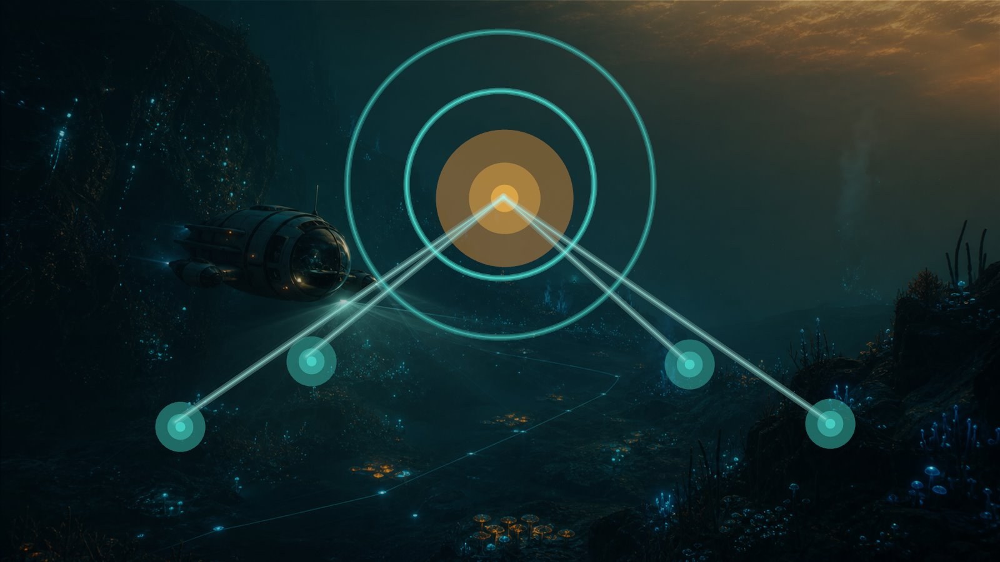

Contact
Send corrections, sources, and site questions
Blueprint Atlas depends on careful source checks. Use this page for correction notes, verified route evidence, and general website questions.

Contact email: contact@s2guidehub.com
For route or item corrections, include the item name, the claim that should change, the source link or verification note, and the date you checked it. Please do not send copied official art, maps, or large copied text blocks.
Useful reports
- New blueprint or fragment evidence with a source link.
- Coordinate or route corrections with a last-checked date.
- Patch changes that affect item requirements or route risk.
- Broken links, layout problems, or translation issues.
中文说明
如果你发现蓝图路线、解锁项、坐标、翻译或页面显示问题，可以发送邮件到 contact@s2guidehub.com。
反馈攻略内容时，请尽量附上道具名称、需要修改的说法、来源链接或实测说明，以及核查日期。请不要发送官方图片、地图素材或大段复制文本。